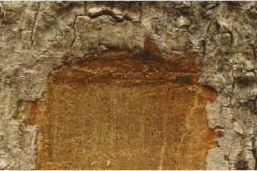
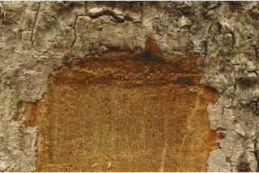
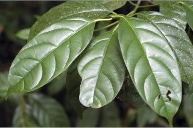
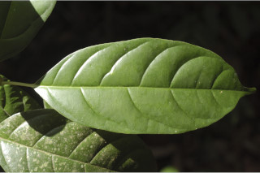
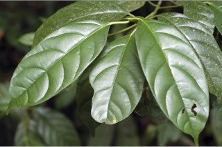
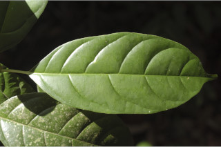

Images :
 

 



| Habit : | Trees up to 20 m tall. |
| Leaves : | Leaves simple , alternate , spiral ; petiole 1-4 cm long, canaliculate , glabrous ; lamina 6.5-16 x 2-10 cm, elliptic or obovate , apex caudate - acuminate with blunt tip ( acumen 0.8-1.8 cm long), base cuneate to attenuate , margin entire or slightly revolute when dry, green above, pale beneath, glabrous ; midrib canaliculate above; secondary_nerves 4-8 pairs gradually curved; tertiary_nerves somewhat closely_horizontally_percurrent . |
| Inflorescence / Flower : | Inflorescence terminal panicles . |
| Fruit and Seed : | Drupe , ellipsoid , 1.8-3.8 x 2 cm, crowned by the scar of calyx-lobes , 1-seeded . |